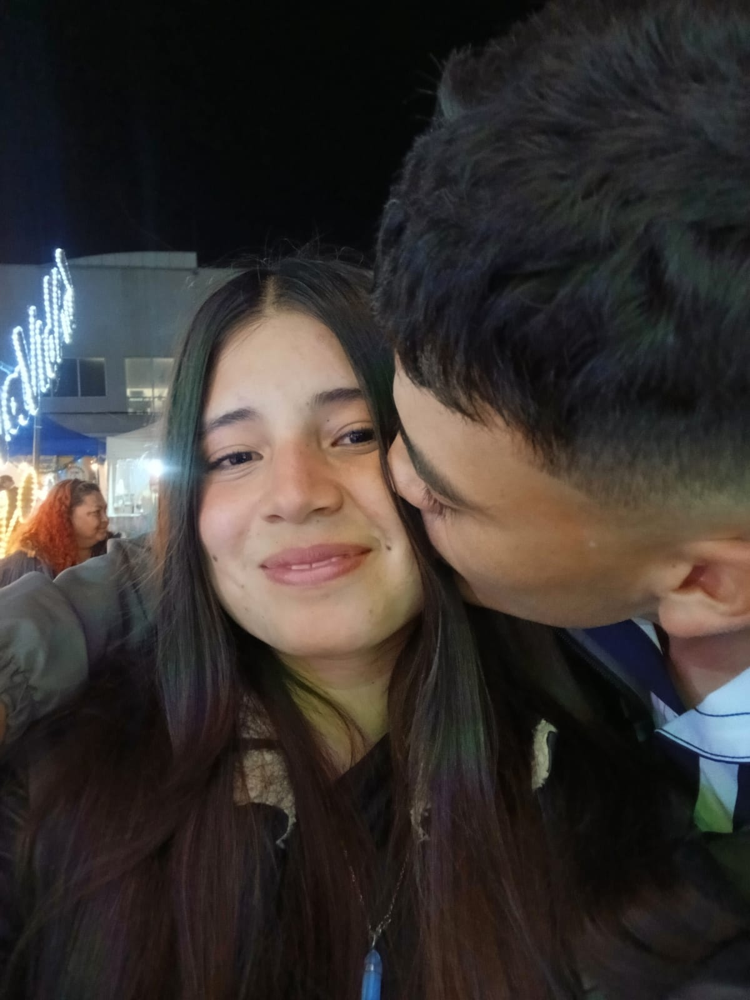

HOLA MI AMOR
Esta es mi propuesta formal
Para que seas mi San Valent√≠n üíñ

¿Por qué tú?
Porque eres mi noviecita linda, hermosa, tierna....
Eres especial, √∫nica y haces mis d√≠as mejores üòä

SEÑORITA TATIANA LOPEZ COY :)
¿ACEPTAS SER MI SAN VALENTIN? üíï
Sab√≠a que dir√≠as que s√≠ üòç

Dime la palabra clave: "S√≠, mi merengoncito" üíå
A quien te pregunte, le dices "Ya tengo planes para
este 14 de febrero con mi noviecito, sorry :)"
Oh... ¿Segura? ü•∫
Pi√©nsalo otra vez... ¿De verdad quieres romper mi corazoncito? üíî
Está bien, lo entiendo üíî

Aunque me duele, yo te seguiré queriendo...